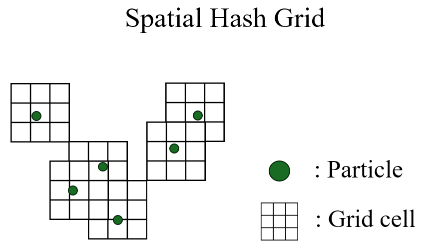
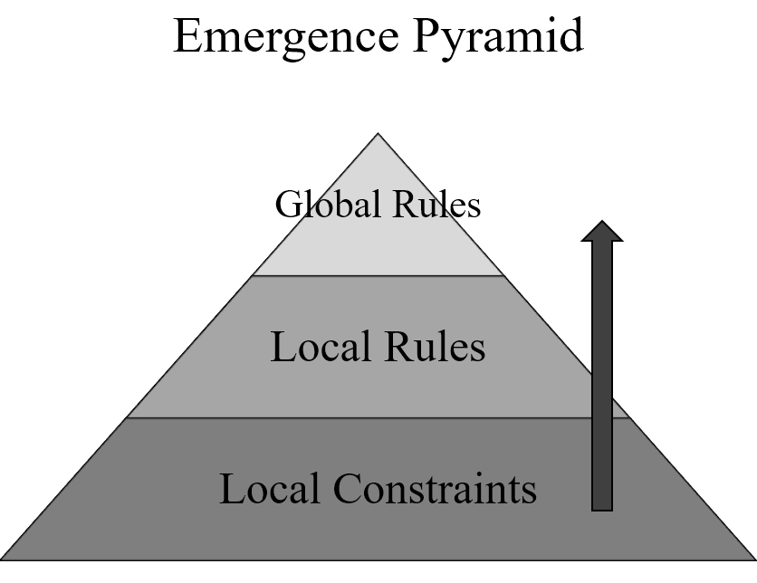

Introduction
The project was originally inspired by cellular automata (CA), pioneered by John von Neumann and Stanisław Ulam.
I was particularly interested in emergent systems and algorithms. The systems I researched included Particle Lenia by Alexander Mordvintsev, Lenia by Bert Chan, and Ant Colony Optimisation (ACO) by Marco Dorigo. The game I made prior to this project, Node-CUT, was another reason why I started this project because the game creates dynamic shapes using a binary tree algorithm, which led players to make dynamic decisions. I wanted to scale the system up this time, and an emergent system seemed like a good choice.
My initial intention was to create a game in which players control thousands of viruses invading the immune system. However, playtesters did not find it fun because of its controls and core gameplay loop, which led me to create HYDRA.
Emergent System
Dynamic patterns in emergent systems truly occur when a bottom-up structure is applied. A bottom-up structure is one in which the smallest components, such as atoms, and their interactions with other components create larger phenomena. This is well illustrated by Charles Darwin’s theory of natural selection, in which complex system-level behaviour arises from interactions among simple components. Steven Johnson also describes bottom-up systems through ant colonies and cities, where complex organisation emerges from numerous simple local interactions rather than central control. Many simulation games use this principle to provide players with endless decision-making opportunities. However, some players find it difficult to understand every feature to fully enjoy the freedom these games provide. Therefore, my goal in this project was to create an immediately understandable game with an emergent system, while retaining its main advantages: endless decision-making and visually appealing patterns.
Building System
To successfully realise a bottom-up structure, I had to learn how to create thousands of particles because the greater the number of particles, the easier it is to observe patterns from a distance. Sphere-shaped particles are often used in simulations such as Particle Life because their physics are simpler to calculate based on their radius. I also studied optimisation, as thousands of particles need to detect other nearby particles. Without optimisation, each particle would need to check for collisions against every other particle continuously, which could easily overwhelm the system due to its O(N2) complexity.
I therefore implemented spatial hashing, which checks each particle’s position and assigns it to a hash grid cell. The system then checks that cell and its neighbouring cells for nearby particles. This significantly improved performance.

Dilemma: Consistent Game Logic vs the Nature of Emergence
The less developers intervene in the global rules hierarchy, the more emergent phenomena are likely to occur. In particle life, attraction and repulsion are normally used as local constraints. The Lennard-Jones potential is also widely used, which is basically attraction and repulsion, but with different magnitudes depending on the distance between the particles. Local rules and global rules are also important for a playable game. Unlike in simulations, game developers set the meaning of each consequence. Meaning should be understandable and consistent. If the gameplay system is dynamic, players will not understand the conditions for winning the game. Behavioural psychology explains this as extinction. All consequences (stimuli) should be consistent unless otherwise intended.

However, as I addressed earlier, more global rules will produce fewer emergent phenomena. Fewer global rules will make the game unplayable, as its consequences have no meaning. Many playtesters saw my game as a fascinating system rather than a game. That is why I started searching for emergent algorithms that could create global and predictable patterns, which led me to Ant Colony Optimisation (ACO).